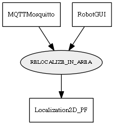

Global overview
All modules
All variables
All commands
Mission files
Pipelines
Variable: RELOCALIZE_IN_AREA
Variable info:
Variable name
Short description
Who publishes it?
Who subscribes to it?
RELOCALIZE_IN_AREA
Relocalize the robot in the given area. Var value is: "[x_min x_max y_min y_max]"
MQTTMosquitto
RobotGUI
Localization2D_PF
Variable graph:

Detailed description:
Relocalize the robot in the given area. Var value is: "[x_min x_max y_min y_max]"
Page generated by
Mooxygen 1.1.0
at Thu Jan 22 11:30:21 2015